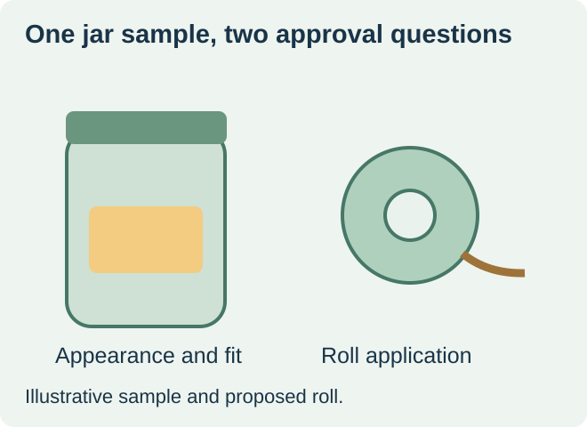
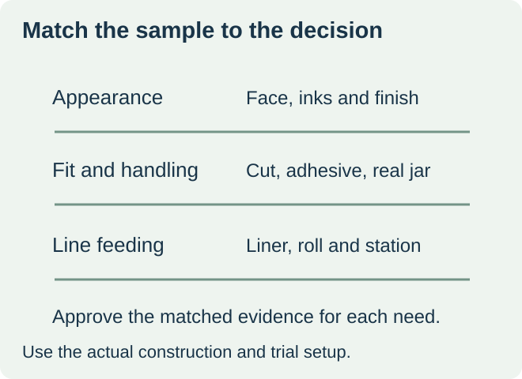

A label can have an approved physical color reference and still need another content check after a copy change. It can also have unchanged copy while a new stock or finish makes the previous appearance approval incomplete.
Link each revised file to the evidence it can still use and the questions that must be reopened. Choosing a proof level is the first decision; keeping that decision valid after a revision is the procurement task addressed here.


Decide what this physical sample can release
Keep an approved sample for the features it represents. Request a targeted new sample when a physical difference affects the remaining decision. Start with two records: what was actually delivered as a sample and what the converter plans to run. Enter the material, finish, cut, adhesive, backing and application format in both. Label an unknown field as unresolved and ask who can verify it.
Consider a hypothetical pesto jar with a matte printed label. The buyer has a hand-applied sample with the intended visible paper and finish. The production proposal specifies the same face but a different adhesive and release liner on a machine roll. Keep the sample as an appearance reference where the actual printed construction matches. Hold the adhesion and feeding decisions for the matching construction and roll trial.
| Approval need | Compare these features | Smallest useful next sample |
|---|---|---|
| Appearance at purchase | Face, ink build, white or metallic layers, finish and viewing conditions | A production-material proof or drawdown targeted to the unresolved visual effect |
| Fit or handling | Cut shape, finish, adhesive, package and intended exposure | A representative finished label on the actual filled package |
| Line feeding and application | Liner, cut, gap, unwind, core, roll geometry and station | A representative converted roll reviewed against the intended line |


Write the scope and the open condition together
Use a short release record: “Sample S1, artwork revision C, approved for matte appearance on the named jar. Adhesive and roll feed remain open pending the proposed construction at the intended station.” If the converter can show that the relevant construction and setup are equivalent, keep the original evidence for that purpose. Where equivalence remains uncertain, agree a targeted trial and record what will count as acceptance.
Ask the supplier to price the specific proof or trial, identify setup or material charges and show the point at which the result can release production. A broader sample may be worth requesting if one construction change affects both appearance and application. Name the matching features and intended conditions so the supplier can propose the right artifact.
Use the food label options to frame the specification and prepare the label inquiry. Share the sample ID, proposed material and finish, intended liner and format, container, application method and quantity. State the one outstanding appearance, fit or line question.
Add a change-impact page to the proof record
Do not replace the signed approval with a newer attachment and assume its meaning transfers. Keep the approved file, the proposed revision and a short description of what changed. Ask the responsible reviewer which previous evidence still represents the revised job.
| Proposed change | Review question | Record before release |
|---|---|---|
| Copy or SKU identifier | Did layout, small text or code content also move? | New content proof and named copy owner |
| Process or spot-color build | Does the existing physical target still represent the proposed output? | Color target, process and decision on proof evidence |
| White layer or transparent window | Does the filled package still provide the intended appearance? | Layer revision and relevant production-material sample |
| Stock, coating or laminate | Can the previous color and surface approval be reused? | Construction identity and limitations of retained evidence |
| Foil, relief or cut geometry | Does the approved sample represent the changed layer and registration? | Affected layer/tool reference and revised review scope |
This is an editorial handoff sheet, not a universal requirement to buy every proof again. A copy correction may leave a previously approved color target relevant. Conversely, unchanged artwork does not establish equivalence when its physical construction changes. The decision should name what remains valid and why.
Use explicit approval wording
A useful release note identifies the exact file revision, SKU and proof or sample ID. It then states what is approved, what is excluded and which unresolved item prevents production release. Avoid an email whose attachment is revised artwork but whose approval text refers to an older file.
For example, a hypothetical buyer could approve spelling and layout in revision C while retaining an identified color target from revision B, subject to the converter confirming that the color build and construction are unchanged. That sentence is a proposal for review, not a statement that every copy change preserves color. If a change affects the barcode or its surroundings, obtain the appropriate separate code checks.
Keep one person responsible for gathering the decisions, with content, color and technical sign-off assigned to people authorized for those subjects. This prevents a purchasing coordinator from unintentionally approving a color tolerance or mandatory wording on somebody else's behalf. Cost and schedule can then be discussed against named remaining questions rather than the vague request for another sample.
See the artwork preparation guide for file inputs and Pantone versus CMYK for the separate color-reference choice.
Short answer
Use the digital proof to approve content and layout. Use a color-managed contract proof to approve a defined color expectation. Use a production-material sample when substrate, white ink, metallic reflection, texture or finishing is the real question. One proof cannot prove everything.
The dangerous approval email is only two words: “Looks good.” Good in what way? If the legal copy is correct but the buyer means the monitor green, the pressroom and customer have approved different things.
Four proof levels solve four problems
| Proof type | Best for | Does not fully prove |
|---|---|---|
| Online PDF / soft proof | Copy, layout, dieline, versions | Physical color and material |
| Printed content proof | Readable size and physical layout | Contract color unless color-managed |
| Contract color proof | Measured process and spot-color expectation | Every production substrate and finish |
| Production-material sample | White ink, clear film, metallic, texture, foil | Full-run variation unless agreed |
A composite pesto-label approval
This is a composite planning example. A brand approves a PDF for a deep green pesto label from a bright laptop screen. The printed label is accurate to the supplied CMYK values but looks duller on uncoated textured paper. The brand says the proof was brighter; the converter says the numbers match.
Both statements can be true. The monitor uses emitted RGB light. The label uses reflected light, ink and a paper that absorbs and scatters color. A quick approval without that distinction postpones the disagreement rather than resolving it.
The better workflow is to approve copy first, establish a physical color target, identify the actual substrate and decide whether a contract proof or production drawdown is justified.
Content proof and contract proof are not synonyms
Esko's version 23.03 proofing documentation distinguishes content proofing from color-managed contract proofing. That distinction is useful even when a converter uses different software: content approval answers “is everything present and correct?” Color approval answers “what measured appearance are we targeting?”
A contract proof needs known profiles, proof media, viewing light and tolerances. A desktop print from the sales office can be useful for scale but should not quietly become the color standard.
Why the final stock still matters
White paper, kraft, clear BOPP, metallic film and textured wine paper change color differently. Clear labels may need white underprint; metallic labels combine reflected substrate with ink; foil and embossing depend on angle and touch. Even a strong contract proof can only simulate some of these effects.
A physical color reference should account for the actual substrate and process, because the same nominal color does not appear identical everywhere.
Approval checklist
- Confirm SKU, revision, quantity and dieline dimensions.
- Read all copy at 100% and verify ingredients, warnings and net quantity.
- Scan production barcodes from a suitable physical sample.
- List process colors, spot colors and the physical reference used.
- Identify face stock, finish, white ink, foil and emboss layers.
- State the viewing condition and color tolerance for contract approval.
- Record exactly what the signed proof approves.
When the faster proof wins
A contract proof is not necessary for every reorder or low-risk internal label. When copy is the only change and the construction already has an approved production standard, a controlled digital proof may be enough. Spend the physical proof budget where the visual uncertainty is real.
Read Esko's official explanation of content and contract proofing. For file preparation before proofing, use our Label Artwork File Setup guide.
Send the approved and proposed revisions together
Discuss the proof scope for your revised label with the current approved file or sample ID, proposed revision, change list, construction and quantity. State the unresolved decision rather than asking for a guaranteed screen match. The form opens an email draft; send attachments through the listed email or WhatsApp route. Proof options, charges and production release need project-specific confirmation.